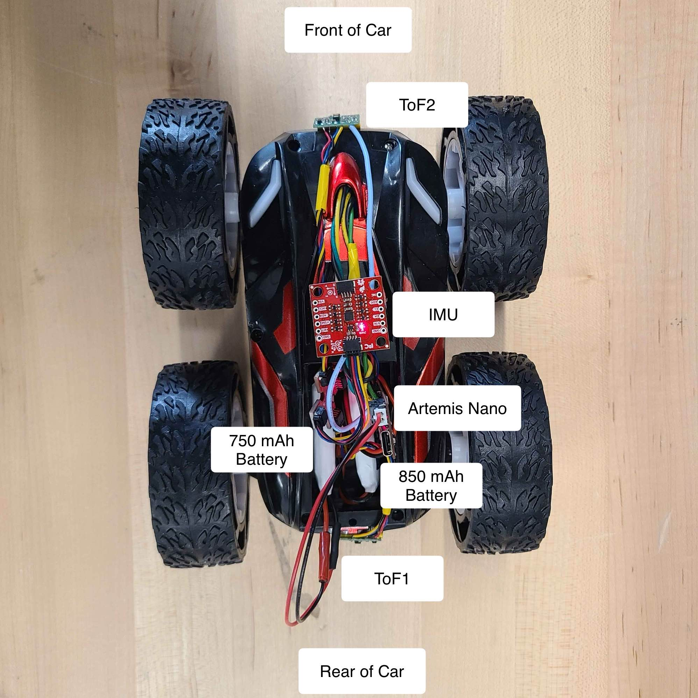
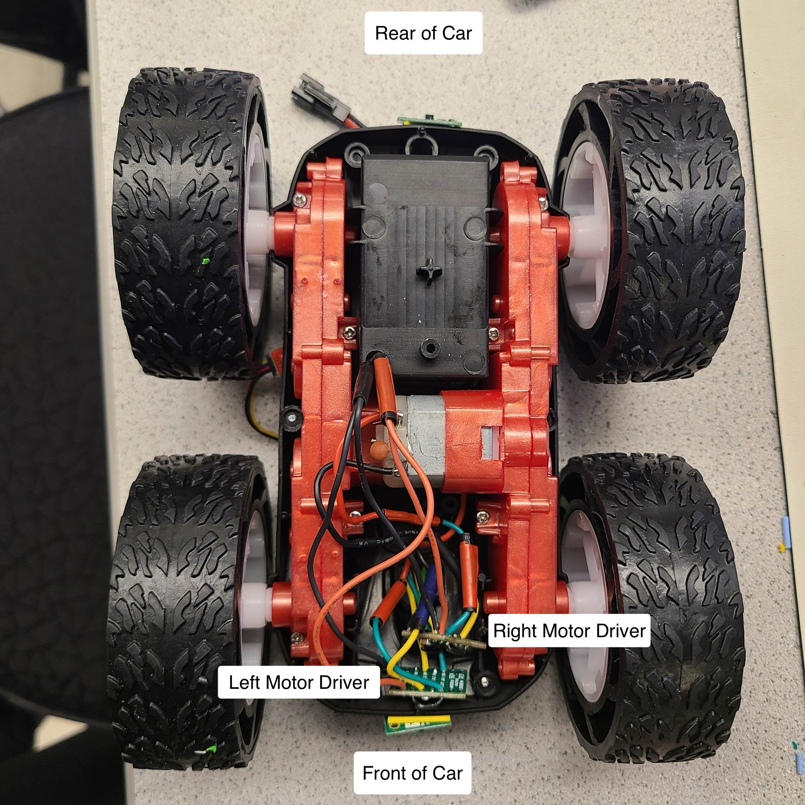

Lab 4: Motor Drivers and Open Loop Control
Prelab
Before coming to lab, I prepared a wiring diagram for how I planned to connect my motor drivers, Nano, and batteries together. To do this, I used information that I could find about the pin functions of the motor drivers from the provided datasheet.
Below is a labled copy of that wiring diagram:
Diagram with your intended connections between the motor drivers, Artemis, and battery (with specific pin numbers)
{kind=link}
What pins will you use for control on the Artemis? (It is worth considering both pin functionality and physical placement on the board/car).
I chose to use pins 0,1,4, and 5 for motor control on the Artemis. In making this decision, I considered the location of the pins (all were located on the same side of the board as my already soldered XSHUT pin for the ToF sensor which helped with tidiness and reach of the wires) as well as functionality -- (GPIO pins 0,1,4, and 5 on the Artemis are all PWM capable pins.) Further, I could also use the corresponding GND pins located under these 4 pins to further consolidate/organize my wires.
Along with this wiring diagram, I also came to lab with a general idea of how I wanted to route my wires and place components within the car's chassis. Through much experimentation, I found it more effective to trial and error component placement along the car's chassis, temporarily taping components down to test fit and adjust wire routing as needed. This approach proved easier than pre-planning all cable routes and component placements, as the chassis space was more constrained than I initially anticipated.
When wiring, I followed as many best practices as possible, routing my signal wires as far as possible from the motors and their magnets, which could cause interference. I reserved black and red wires for power, coordinated the color coding of signal wires to make tracing and debugging easier, and tried to keep the wires as short as possible to mitigate noise, while also ensuring they were long enough to reduce strain and prevent breakage. Additionally, I used stranded wire wherever possible, especially in areas that would undergo frequent bending, to mitigate the possibility of breakage.
We ask you to power the Artemis and the motor drivers/motors from separate batteries. Why is that?
We power the Artemis and the motor drivers with separate batteries, as the motors and motor drivers often demand significantly more current than the Artemis, especially during startup or when under load. By powering the two separately, we can ensure the Artemis gets a stable, clean voltage without fluctations or noise caused by the motor's high current draw.
Additionally, powering the two separately has an added benefit of extending the battery life/runtime of the robot as the Artemis is not drawing from the same supply as the motors.
Lab Tasks
Proceeding with the lab, I started by first soldering jumpers to and connecting one of the DRV8833 motor drivers to my board. I then connected the motor driver outputs to the oscilloscope, and the power inputs to the + and - terminals of the power supply.
A labeled picture of my oscilloscope setup is shown below:
Although the motor drivers are capable of being supplied with up to 10.8V (according to the TI datasheet), I set the power supply settings to a controlled voltage of 3.7V to match the 3.7V Lipo battery that the motor drivers would be supplied with in future tests for consistency.
Include the code snippet for your analogWrite code that tests the motor drivers.
Below is a snippet of the code that I used to test the PWM signals generated by the motor driver:
I was inspired by Stephan Wagner's PWM test code to cycle through varying duty cycles and record the changing PWM output on the oscilloscope.
Image of your oscilloscope
Below is my oscilloscope output when running the test code and using the setup shown above:
Once I had verified that the PWM signals matched my expectations, I wired the motor driver outputs to the motor terminals.
I then propped the car up on one side and ran the following code to continually alternate between driving the right set of wheels forward for 5 seconds, stopping the motor, and driving in reverse for 5 seconds.
This code allowed me to test that I could successfully drive the motor in both directions, and stop the car as well.
Short video of wheels spinning as expected (including code snippet it's running on)
The wheels move fast in the video, but if you slow the video speed down, you can see that the car switches between driving forwards and in reverse as expected!
After verifying that one set of wheels could be successfully driven, I soldered the remaining motor driver to the left motor and ran the following code to verify that I could now drive both motors simultaneously (forwards, reverse, and stopped).
To conduct this test, I elevated the robot onto two wooden blocks from the lab, so that the robot would not run away. I also ran this test using the 850 mAh battery to power the motors, and the 750 mAh battery to power the Nano to fully test powering the car off of battery power as well.
Short video of both wheels spinning (with battery driving the motor drivers)
As I began to approach the end of the lab, I started to finalize the placement of all components within the car's chassis.
This step took quite a bit of time as I had noticed during testing that there were some flaws in my initial wiring plans.
For example, when I first soldered and placed my motor drivers in my car's chassis, I decided to route all wires coming from the Artemis to the drivers through the passthrough hole that was present in the bottom of the battery compartment (a picture is shown below).
Initially this seemed like a great idea for cable tidiness, but as I realized in practice, due to the limited length of these wires ( I had trimmed them to be as short as possible to reduce possible noise), it lead to the motor drivers being pulled into the motors, making the bottom casing extremely difficult to close, and placed excess strain on the other wire connections to the motor drivers.
Additionally, this wiring setup also had the Artemis wired face-down (another picture shown below). At first I did not think this would be a major issue, but after trying to disconnect and reconnect the USB-C cable to the Nano multiple times, I decided to flip the board so that the USB-C port was more easily accessible. It also allowed for much more ergonomic access to the reset button and JST connector.
After all of this trial and error, resoldering, and cable management, I arrived at the following design:
Picture of all the components secured in the car. Consider labeling your picture if you can’t see all the components
Overhead View
Underside View
The Nano now faces upward for easy access to its ports and reset button, the two batteries tuck nicely into the provided battery compartment, and the motor drivers and their connections to the motors now have plenty of space in the underside compartment in case of crashes or bumps.
Additionally, with the majority of the sensitive electronics and wires located to the top of the car,(albeit some stray wires will need to be more securely held down in case of flips), I expect this will make things much easier for me to service components and debug wiring issues when things inevitably break.
Lower limit PWM value discussion
After testing a range of PWM values on the Nano, I narrowed down that the lower limit PWM value to pass to the motor drivers was somewhere around 40 for the right motor and 50 for the left motor to overcome static friction and get the car in motion in a straight line.
To get the car to turn in place from a standstill, I discovered that the PWM values needed to be even higher — around 140 for the left wheels to start turning, and around 100 for the right wheels. I suspect this could be due to the increased friction when skidding the tires along the ground in opposite directions to initiate the turn.
Calibration demonstration (discussion, video, code, pictures as needed)
I then attempted to get my robot to drive in a straight line for a length of at least 6 feet. Using the tiles in the Duffield atrium to mark my distance travelled (which were 1ft by 1ft), I attempted to drive the robot for about 3 seconds to reach 6 ft.
From my previous testing (in Task 6), I noticed that there was a discrepancy in the two geartrains that needed to be accounted for. I noticed that even when supplied with the exact same duty cycle, the right wheels spun for slightly longer and with seemingly more speed than the left wheels. To get a basis for the difference between the two geartrains, I tested driving the robot straight with an estimated calibration factor of 1.8 (that is multiplying the PWM value of the left driver by 1.8 the value of the right) to correct for this discrepancy and see where/if the robot would still drift:
Noticing that I had overcorrected with the calibration factor and the robot now drifted too far to the right, I tested a calibration factor of 1.4 instead:
As shown above, the robot successfully traversed the 6 feet maintaining a relatively straight heading along the tiles!
Here is a snippet from the calibration factor testing code:
Lastly, I tested open loop control of my robot to see if I could write a series of commands to have the robot drive straight out, turn 180 degrees, and return back to its initial starting position.
Here is the video of that program running:
As we can see in the clip above, the robot attempts to make the full 180 degree pivot, and is quite close, but due to either some incorrect calibration factor/pwm value or a draining battery from previous runs, it is a couple degrees off from a complete turn and runs into the wall.
Regardless, this was a successful test of trial and error-ing and having the robot make turns and navigate a pre-programmed path without having any data being fed back to the system to make corrections!
And below is a snippet of the final code: